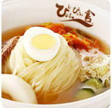
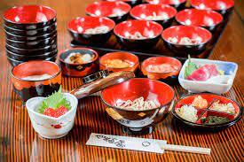
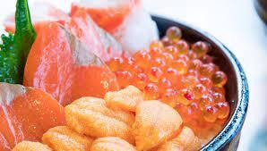

岩手県のおすすめな食べ物紹介
冷麵

盛岡冷麺は、盛岡の麺職人・青木輝人氏が昭和29年に「食道園」を開店した際に、朝鮮半島に伝わる咸興冷麺と平壌冷麺を融合させ、創作したのが始まりです。
咸興冷麺は、甘辛いソースに麺を混ぜ合わせていただく「ピビン冷麺」。一方の平壌冷麺は、ミルクのようにまろやかな高麗キジのだし汁に、酸味のある大根の水漬け「冬沈漬（トンチミ）」の汁を加えた、あっさり味のスープ冷麺です。
青木氏は、高麗キジのだし汁に似た牛スープに酸味と辛味のあるキムチを組み合わせ、独自の味とスタイルを完成させました。また平壌冷麺は、ソバ粉を練り上げた黒っぽい麺でしたが、青木氏はソバ粉の代わりに小麦粉を使って半透明の麺に仕上げました。朝鮮半島の麺特有のコシの強さはそのままに、さらに「喉ごしの良さ」「見た目のおいしさ」を加えた、独自の冷麺を作り上げたのです。
わんこそば

「わんこそば」は一口に小分けされた温かいそばを「わんこ（お椀）」に入れて薬味と一緒に食べる料理で、岩手県盛岡市と花巻市を中心とする郷土料理です。
一口に小分けされているので何杯でも食べ続ける事を前提としており、小分けにされたそばは10～15杯程度で一般的なそばの1人前の分量になります。
たくさんの分量を食べてもらえる様にそばの麺にも工夫がされており、小分けにし易いように通常の麺より長く切られ、喉越しが良くなっています。
麺つゆは濃い目に味付けされていますが、かけそばの様にたっぷりのつゆが出てくるわけでなく、一口に小分けされたそばはそれぞれあらかじめ麺つゆにくぐらされているので、ぼそぼそとした食感ではなくのど越しよくツルッと食べる事ができます。
もちろん麺だけをひたすら食べ続けるのも大変なので、変化が加えられる様に薬味には様々なバリエーションがあります。
ネギ、のり、鰹節、とろろ、天ぷら、イカの塩辛、まぐろ、納豆、大根おろし、なめこおろし、そぼろ、わさびなど好みに応じて好きな量を適宜そばにいれます。
海鮮

様々な自然に囲まれる岩手県は、質の良い海産物の宝庫としても知られています。
三陸の海産物と言い換えるとイメージが湧く方もいらっしゃるのではないでしょうか。
三陸ではアワビやワカメ、牡蠣やホタテなどの質が有名で、様々なレストランやシェフの手によって皆さんの食卓に提供されています。
実は、岩手県の海産物は東日本大震災の影響を大きく受け、一時は漁獲量も大きく落ち込んでしまいました。
漁船や漁港、養殖施設の早期復旧・整備を行い、現在では復興も進んでいます。
例えば、アワビ・養殖ワカメの漁獲量は震災前の6〜8割ほど回復しており、徐々に皆さんの食卓に三陸の海産物が届きつつあります。
岩手県にお越しの際には、岩手県三陸の海産物をぜひご賞味ください